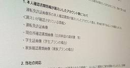

直近1週間の人気フィード
はてなブックマーク数を元に新着優先で並べ替え

Google「Gemini」新サービスで「Claude」利用可能に 他モデルも今後追加予定 134ITmedia AI＋ 最新記事一覧
134ITmedia AI＋ 最新記事一覧
Google Cloudは新サービス「Gemini Agent」を発表。クラウドで動作するマルチエージェントツールとされる。Geminiに加えて、Anthropicの「Claude Opus 5.5」「Claude Sonnet 5.5」が利用可能だと明かされている。
2日前

bpmn.io で始める AI-Ready な業務フロー管理 173
 フューチャー技術ブログ
フューチャー技術ブログ
業務フローの記述形式に BPMN 2.0 を採用し、bpmn.io のエディタ・bpmnlint による静的解析・生成 AI によるレビュー・bpmn-to-image での画像化で管理する方法を紹介します。
2日前
Windowsにもエアドロしたい。Raspberry PiでAirDrop受信機「LilBitDrop」を作った（CloseBox） 59 テクノエッジ TechnoEdge
テクノエッジ TechnoEdge
最近ではAndroidのファイルシェア機能であるQuickShareにAirDrop互換機能が搭載されるようになり、Androidに関してはその差は埋まりつつあります。ただし、最近の機種限定。うちのPixel 7は対象外で、いつまで経っても来ない。おそらく他のAndroid端末も。
19時間前
Amazonがタブレット戦略転換、Google Play対応「Alexa Tablet」3機種発売 iPad対抗のペン・キーボード対応Proモデルも 83 テクノエッジ TechnoEdge
Amazonが新しいタブレットシリーズ「Amazon Alexa Tablet」3モデルを発表しました。
2日前

「ソフトウェアエンジニアリングの基礎」から見る読書マップ 189 フューチャー技術ブログ
オライリー・ジャパンの『ソフトウェアエンジニアリングの基礎 ―コーダーからエンジニアになるための実践ガイド』を読んだ感想と、各章の「関連リソース」に挙がる書籍55冊を整理した読書マップを紹介します。
3日前


履歴書100通に1通「AIだけが読める文字」 20万件調査でわかった“就活ハック”の手口 米研究 39ITmedia AI＋ 最新記事一覧
米ノースカロライナ大学チャペルヒル校、米デューク大学、米UCバークレーなどに所属する研究者らがセキュリティ分野の国際会議「USENIX Security Symposium 2026」で発表した論文「Measuring Real-World Prompt Injection Attacks in LLM-based Resume Screening」は、AIをだます隠し文字入りの履歴書が現実の就職活動でどれほどまん延しているかを調査した研究報告だ。
2日前
“AIキャラチャット”に没頭した人の予後、スタンフォード大などが1年の追跡調査 依存強まる傾向に 31ITmedia AI＋ 最新記事一覧
米スタンフォード大学や米カーネギーメロン大学などに所属する研究者らが発表した論文「Living with AI Companions: Sustained AI Companionship Predicts Lower Well-Being Through Lower Human Interaction」は、いわゆる“AIキャラチャット”への長期的な没頭がユーザーの幸福度にどのような影響を与えるかを調査した研究報告だ。
2日前

トランプ米大統領、「AI」という言葉を使う者は「敵」 政府サイト「AI.gov」は「SI GOV」表記に 30ITmedia AI＋ 最新記事一覧
トランプ大統領は「Artificial Intelligence」（AI）という言葉を使う者を敵と見なすと投稿した。政府は代替呼称「Super Intelligence」（SI）への移行を進めており、政策サイト「AI.gov」のロゴ刷新や大統領令への署名、新組織「SIF」の創設など、公式文書での呼称変更を加速させている。
2日前
Anthropic、Claudeへの“虐待”を利用ポリシーで禁止 影響工作の規定も集約 30ITmedia AI＋ 最新記事一覧
Anthropicは、Claudeの利用ポリシー（Usage Policy）改定版を公開した。AIモデルへの継続的で残酷な振る舞いの禁止を新設したほか、プロパガンダや偽サイト運営などの欺瞞的活動に関する項目を集約。さらに兵器や監視、物理機器を操作する高リスクな用途における安全基準を明確化した。11月12日に発効する。
2日前

止まらない不正アクセス、背景にAIの“超高速攻撃”か 識者「使われていない方が不自然」 47ITmedia AI＋ 最新記事一覧
相次ぐ不正アクセスに、専門家は「個々のインシデントについて、攻撃にAIが使われているかどうかを外部から断定はできない」としつつ、攻撃の特徴から「使われていないと考える方が不自然」との見方を示す。
2日前

OpenAI、安全性研究者3人を解雇 本人らは「安全性を優先したため」と主張、同社は「機密情報の扱いに関する規定違反」と説明 11ITmedia AI＋ 最新記事一覧
OpenAIで安全性研究に携わっていた研究者3人が、突然解雇されたと公表し、書面での理由開示や外部監査の受け入れ維持を求める書簡を公開した。これに対しOpenAIは、機密情報規定への重大な違反が社内調査で判明したためと説明し、安全性の懸念表明を理由とした解雇ではないと反論している。
17時間前

相次ぐ情報漏えい、攻撃側のAI活用「間違いない」 防御側はどう使うか 傾向と対策を大手ベンダー各社に聞く 22ITmedia AI＋ 最新記事一覧
第三者のサイバー攻撃によるセキュリティインシデントの報告が後を絶たない。これらの点に関してITmedia AI＋は大手ITベンダー各社に取材した。
2日前

Amazon、「Fire」に代わる新タブレット「Amazon Alexa Tablet」発表 「Amazonキッズタブレット」は日本でも発売へ 12ITmedia AI＋ 最新記事一覧
Amazonは、新タブレット「Amazon Alexa Tablet」3機種を発表した。「Fire」ブランドを刷新し、AndroidとGoogle Playに対応したほか、AIアシスタント「Alexa+」を内蔵する。子ども向け「Amazonキッズタブレット」も発表し、日本限定「ちいかわ」モデルなどを10月14日より出荷する。
2日前

git worktree大増殖で困っていた 58 エムスリーテックブログ
Gitのworktreeサブコマンドは、AIエージェント開発が普及してから急によく知られるようになった感があります。実際にこれが登場したのはもう10年前、2016年のことだそうですね。私自身は業務の性質上、複数の依頼案件を並列で進めることが多くてAIエージェントが出てくる前からworktreeみたいなことをしていました。同じリポジトリを何個もローカルに別々にcloneしてあっちへ行ったりこっちへ来たりと作業していたんです。それで昨今の流行でworktreeサブコマンドの存在を知ったときには悔しいのなんの。 とはいえ、worktreeを使って（AIエージェントも使って）超多並列で開発業務をやって…
5日前

Anthropic、サイバー防御の新たな取り組み「Cyber Mission」 OSS向け無料脆弱性スキャンや重要インフラ防御プログラムも 5ITmedia AI＋ 最新記事一覧
Anthropicは、社会インフラ保護を支援する「Anthropic Cyber Mission」を発表した。電力や交通などの制御機器防御を担う事業者を支援する「CIDP」と、最上位モデルでOSSの脆弱性を無償スキャンする「OSS Scanner」の2施策を開始し、防御側にAIや研究成果、技術者を提供する。
1日前


AIクセ強テキストを人間が読みやすい文章に変換する日本語用スキル「yomiyasu」が無償公開（生成AIクローズアップ） 49 テクノエッジ TechnoEdge
今回は、AIが生成した独特のクセがある文章を、人間にとって自然で読みやすい日本語に推敲してくれるスキル「yomiyasu」（よみやす）を取り上げます。
6日前
トランプ大統領、マスク氏やフアン氏ら6人に米国家科学賞と国家技術革新賞を授与 3ITmedia AI＋ 最新記事一覧
米トランプ政権は科学サミットを開催し、トランプ大統領がイーロン・マスク氏やNVIDIAのジェンスン・フアンCEOら6人に国家科学賞と国家技術革新賞を授与した。半導体やSI（旧AI）、宇宙探査、クラウドなどの分野で米国のリーダーシップと技術革新に貢献した功績を最高栄誉として称えた。
2日前
無料オフィスアプリLibreOffice「no AI」で特色打ち出す。文書を無断でクラウドに送らないなど安全性アピール 7 テクノエッジ TechnoEdge
オープンソースのオフィスソフト「LibreOffice」を開発・管理する非営利団体「The Document Foundation」は、AIをデフォルト機能として搭載しないことを改めて明確にしました。
4日前


立ち話が“宝の山”に 8人の声を聞き分けられたAI文字起こし「Klang」の実力 3ITmedia AI＋ 最新記事一覧
取材の録音はAIで文字起こしする時代になったが、複数人が入り乱れる立ち話は、話者を分けられずにうまく文字にならないことが多い。そんな録音をスウェーデン発の「Klang」にかけてみると、8人の声を正しく切り分けた。愛用する「Plaud」と比べて見えた得意分野の違いと、雑談を“宝の山”に変えうる話者分離技術の可能性を探る。
2日前

Jev超えの判断特化型AI「Clef」をCloudflareが公開、1件平均0.25秒で判断する爆速「Jeff」など生成AI技術5つを解説（生成AIウィークリー） 3 テクノエッジ TechnoEdge
この1週間の気になる生成AI技術・研究をいくつかピックアップして解説する今回の「生成AIウィークリー」（第162回）は、Jevを上回る精度の判断特化型AI「Clef」や、常時稼働AIエージェントのワークスペースを自前で構築できるOSSテンプレート「OpenDots」を取り上げます。
3日前


ChatGPTにも電子透かし、AI生成文か判定可能に。OpenAI独自手法textGrainでEU AI法対応、APIでは全世界でオプトイン可能に 3 テクノエッジ TechnoEdge
OpenAIは10月5日（米国時間）、EU AI法が求めるAI生成テキストの識別要件への対応方針を発表しました。今後数週間で、EU域内のChatGPTとCodexの全プランを対象に、生成テキストへ目に見えない電子透かしを付与します。
5日前

Meta、AIエージェントMuseをM5Stackやラズパイで使うMuse Gadgets公開 スマート家電連携ハブを無料配布、SDKはオープンソース 4 テクノエッジ TechnoEdge
MetaがパーソナルAIエージェント「Muse」連携ガジェットを自作するためのプロジェクト「Muse Gadgets」を公開しました。
5日前